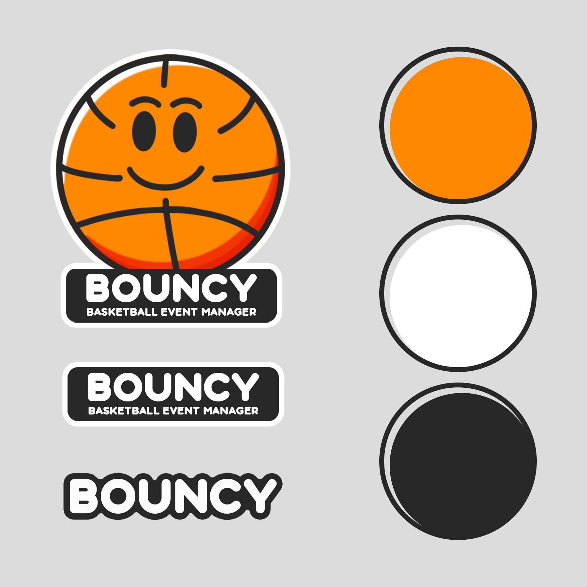
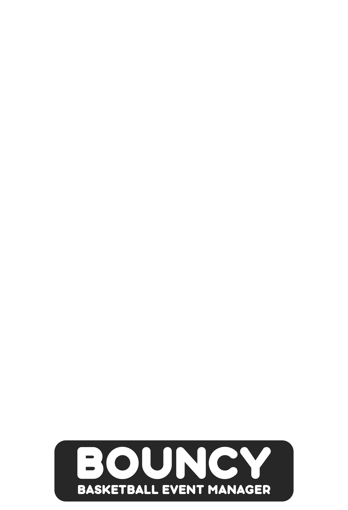
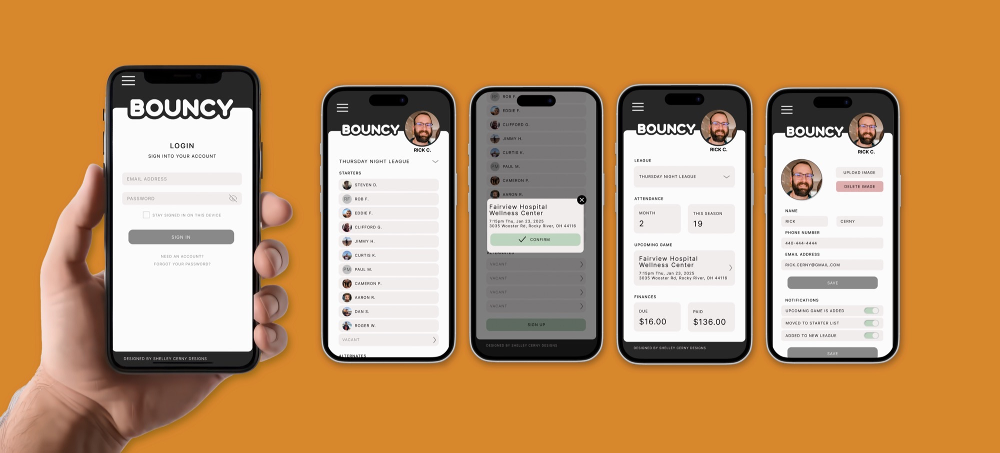

Bouncy
Brand Identity · App Design
Bouncy was born out of a real problem, my husband's basketball league had no good way to manage signups, scheduling, or fee collection. So we built one. Bouncy is a web app where league members can log in, navigate between their respective leagues, sign up for upcoming games, and pay their league fees all in one place. It took a messy, manual process and turned it into something clean and easy to manage for both players and organizers. Since it was built for a basketball league the branding was a no brainer, classic basketball orange, white, and black keeps it feeling athletic, familiar, and fun.


The Problem
My husband's basketball league was running on chaos. Game signups happened through a weekly email, availability was tracked on a Google Form, and the league admin spent every week chasing down Venmo payments manually. For a group of guys who just want to play basketball it was way more complicated than it needed to be.
My Role
I led all UX/UI design from concept to completion, including user research, wireframing, information architecture, and final visual design. My husband handled development while I owned everything design related.
The Process
Having a real user in the house was a huge advantage. I mapped out the core journey (logging in, finding your league, signing up, and paying) and focused on keeping every step as simple and frictionless as possible.
The Solution
Bouncy is a web app where members can log in, navigate between leagues, sign up for games, and pay fees all in one place. Clean, organized, and actually easy to use. The basketball orange, white, and black branding keeps it feeling athletic and fun from the first click.
The Result
When Bouncy launches it will replace the weekly email, the Google Form, and the manual Venmo tracking with one app that handles everything automatically, so the admin can just show up and play.
